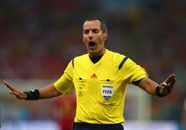

The 2 Best Referees
Mark Gieger of the United States and Pierluigi Collina from Italy are regarded as two of the best referees the world
have ever seen below are some things they have in common.
- Both FIFA referees
- Both attended a World Cup
- Both are world renound referees
- Both give back to younger referees
Brief History of Giegers Career

Geiger first took up refereeing in 1988. He became a United States Soccer Federation National Referee in
2003 and has been officiating in Major League Soccer since 2004. He has officiated in CONCACAF tournaments since
becoming a FIFA referee in 2008, and has officiated Gold Cup and other international tournaments and fixtures.
Geiger was selected for the CONCACAF U-20 Championship in 2011, where he refereed the final.
Geiger officiated at the 2011 FIFA U-20 World Cup in Colombia. He officiated the Group E game between
eventual tournament
champions Brazil and Austria at Estadio Metropolitano Roberto Meléndez in Barranquilla. He then took
charge of the Group B game between Uruguay and Cameroon at Estadio El Campín in Bogotá. He was appointed
to the Round of 16 match between Spain and South Korea at Estadio Palogrande in Manizales. Finally, he
refereed the Final with American Assistant Referee Sean Hurd and Canadian Assistant Referee Joe Fletcher,
between Brazil and Portugal at Estadio El Campín in Bogotá.This is the first time an American has ever
been the referee at a major men's tournament final.
Geiger was selected as the Major League Soccer referee of the year for the 2011 season, and then again in 2014.
In 2012, Geiger was selected as one of 16 referees to officiate at the 2012 Summer Olympics in London. Geiger took charge
of the Group D match between Spain vs. Japan and the quarterfinal between Japan vs. Egypt. In 2013, Geiger was an official at the
2013 CONCACAF Gold Cup.
Geiger was selected as CONCACAF's representative referee for the 2013 Club World Cup.
Geiger was one of 25 referees appointed for the 2014 FIFA World Cup in Brazil.
Geiger described the assignment to the World Cup as "an immensely proud moment". Geiger officiated the 2014 World Cup Group C
match between Colombia and Greece at the Estadio Mineirão in Belo Horizonte; the 2014 World Cup Group B match between Chile
and Spain at the Maracanã Stadium in Rio de Janeiro; and the 2014 World Cup Round of 16 match between France and Nigeria at
the Estádio Nacional in Brasilia, the first American to referee in the knockout round of a FIFA World Cup.
Brief History of Collinas Career
Collina was born in Bologna and attended the University of Bologna, graduating with a degree in economics in 1984.
During his teenage years, he played as a central defender for a local team, but was persuaded in 1977 to take a referee's
course, where it was discovered that he had a particular aptitude for the job. Within three years he was officiating at the
highest level of regional matches, while also completing his compulsory military service. In 1988, he progressed more rapidl
than normal to the national third division, Serie C1 and Serie C2. After three seasons, he was promoted to officiating Serie B
and Serie A matches.
About this time, Collina contracted a severe form of alopecia, resulting in the permanent loss of all his facial hair,
giving him his distinctive bald appearance and earning the nickname Kojak.
In 1995, after he had officiated at 43 Serie A matches, he was placed on FIFA's Referees List. He was allocated five
matches at the 1996 Olympic Games, including the final between Nigeria and Argentina. He refereed the 1999 UEFA Champions
League Final between Bayern Munich and Manchester United; he cited this as his most memorable game because of the cheers at the end,
which he described as a "lions' roar". In this game he allowed three minutes of added time, as Bayern Munich led 1–0 with 90 minutes on
the clock through an early Mario Basler goal, only for two stoppage time goals to give the trophy to United in the Nou Camp.
In 2002, Collina reached the pinnacle of his career, when he was chosen for the World Cup final, between Brazil and Germany.
Prior to the game, Oliver Kahn told the Irish Times: "Collina is a world-class referee, there's no doubt about that, but he doesn't
bring luck, does he?" Kahn was referring to two previous high-profile matches that Collina had refereed which involved Kahn: the
aforementioned 1999 UEFA Champions League Final, a 2–1 defeat for Bayern; and Germany's 5–1 defeat against England in September 2001.
Kahn's luck did not change in the final, and his team lost 2–0.
He refereed the 2004 UEFA Cup Final between Valencia and Marseille. In February 2005, as he reached the mandatory retirement age,
UEFA Euro 2004 was his last major international tournament. His last international match was Portugal – Slovakia, for a 2006 FIFA
World Cup qualifier at Estádio da Luz in Lisbon.
Back to top.
Back to homepage here